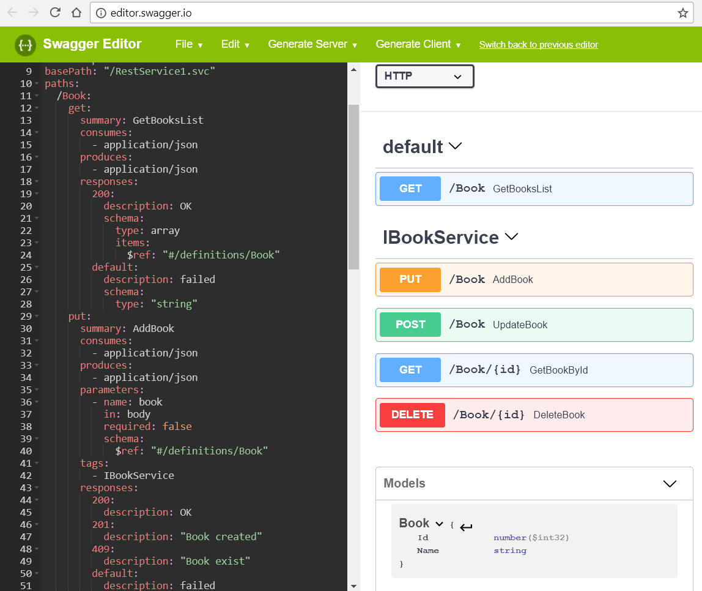

Expand your WCF service with REST
Posted on November 19, 2017 in Develop Updated: December 16, 2017
If you are working with .NET you probably have WCF services.
You might have thought of expanding those WCF services to REST allowing you to make mobile or SPA frontends.
Instead of using ServiceStack or WebApi+Swashbuckle, you can stay in WCF. This have the advantage of a smaller learning curve for other developers.
After this walk-through you have a REST service and swagger.yaml that you can use for creating client code via https://editor.swagger.io/

You can find code for this guide on github.
HowTo create a REST service (including Swagger.yaml) from a WCF service
If you have an existing service you create yet an endpoint allowing you to keep the existing service.
In most cases the best thing is to create yet a WCF service using the same contract as your original WCF service. Just start from bullet 2 then.
1. The templates
This guide is based on Visusal Studio 2017.4
- Create an empty web
- File - New - Project - ASP.NET Web Application - Empty
- => This gives you a project without Global.Ajax and startup files
- Add Ajax-enabled WCF service
- Solution - RightClick project - Add - New Item (Ctrl-Shft-A) - WCF Service (Ajax-enabled) - You could call it
RestService1 - => This gives you a WCF service with webHttpBinding and a ref to System.ServiceModel.Web
- Solution - RightClick project - Add - New Item (Ctrl-Shft-A) - WCF Service (Ajax-enabled) - You could call it
2. The first response
- Change from SOAP to REST response
- In
RestService1.svc.csadd below[OperationContract]:
- In
[WebGet(RequestFormat = WebMessageFormat.Json, ResponseFormat = WebMessageFormat.Json)]
-
- Set a breakpoint in DoWork() and debug project (F5)
- Open http://localhost:15563/RestService1.svc/DoWork in Chrome
- => Breakpoint is hit. Response: {"d":null}
- GET http://localhost:15563/RestService1.svc/DoWork in Postman
- => Response: {"d":null}
3. Change response to <empty> for void functions
- Change from Ajax to REST client
- In web.config
<behavior>: Replace<enableWebScript />with<webHttp /> - Debug project (F5)
- GET http://localhost:15563/RestService1.svc/DoWork in Postman
- => Response:
<empty>
- In web.config
4. Add Sample Interface
- Add a sample interface
- Paste
\models\Book.csfrom https://www.codeproject.com/Tips/1190441/How-to-generate-basic-swagger-yaml-description-for - Paste
\interfaces\IBookService.csfrom https://www.codeproject.com/Tips/1190441/How-to-generate-basic-swagger-yaml-description-for - Notice the code in
IBookServicein this project is changed a bit to allow to POST and PUT aBookobject using JSON in the body of the request. - In
RestService1.svc.csinherit from interface:
- Paste
public class RestService1 : IBookService
-
- Click on LigthBulp - Implement Interface
- Change contract. In
web.configchange from<service contract="WebApplicationWcfRest1.RestService1
to<service contract="WebApplicationWcfRest1.interfaces.IBookService - Implement
GetBookById(). Add line:
return new Book() {Id = 1, Name= "The incredible stamp" };
- Debug project (F5)
- GET http://localhost:15563/RestService1.svc/Book/1 in Postman
- => Response:
{"Id": 1, "Name": "The incredible stamp"} - POST http://localhost:15563/RestService1.svc/Book in Postman - Set Body to
rawand write{"Id": 2, "Name": "The invincible stamp"} - => Notice - you receive the object as a
Bookin C#
5. Create Swagger Yaml
- Create Swagger.yaml - this is the wsdl for REST
- In Project Properties (Alt-Enter) - Build - Select
XML Documentation file- Clear the path - Install https://www.nuget.org/packages/Swagger4WCF into the project containing the interfaces
- Build project
- => The yaml file is in
\bin\WebApplicationWcfRest1.IBookService.yaml
- In Project Properties (Alt-Enter) - Build - Select
- Edit yaml file
- Replace
hostfromlocalhosttolocalhost:15563(or to the test- or prod server host) - Replace
basePathfrom/IBookServiceto/RestService1.svc - Replace all
paths from e.g./GetBooksList:to/Book:(as you wrote in UriTemplate) - Group operations with same
pathtogether and delete the duplicate paths - Those paths having path parameters e.g.
/{id}change parameters fromin: querytoin: path - Save the yaml file into
\interfaces\- update version number each time you send a new version to the client
- Replace
- Test the yaml file
- Goto http://editor.swagger.io/
- Replace left pane with the content of the yaml file (if you use chrome, you can paste)
- => In top of right pane: The should be no errors
6. Move contracts to new library
- Swagger4WCF does not work well with Unity.WCF, so we move the contracts to a new library
- File - New - Project (Ctrl-Shft-N) - Class Library - Name: Contracts
- Drag'n'drop folder interfaces to Contracts
- Drag'n'drop folder models to Contracts
- Add Refs to project Contracts:
System.ServiceModelSystem.ServiceModel.WebSystem.Runtime.Serialization
- Create Swagger.yaml - this is the wsdl for REST
- In Project Properties (Alt-Enter) - Build - Selt "XML Documentation file" - Clear the path
- Install https://www.nuget.org/packages/Swagger4WCF into the project containing the interfaces (Contracts)
- Build project
- => The yaml file is in
\bin\WebApplicationWcfRest1.IBookService.yaml
- Remove
Swagger4WCFfrom projectWebApplicationWcfRest1- In project
WebApplicationWcfRest1add ref to projectContracts - In
packages.configremove line havingSwagger4WCF - Rebuild Solution
- In project
7. Add dependency injection with Unity
- Remove
Swagger4WCFfrom service project- Unload project
WebApplicationWcfRest1 - Remove two lines containing
Swagger4WCFnear bottom
- Unload project
- Add dependency injection
- Install https://www.nuget.org/packages/Unity.Wcf into the project containing the services (
WebApplicationWcfRest1) - => This created file
WcfServiceFactory.cs - View Markup of
RestService1.svc - Replace:
CodeBehind="RestService1.svc.cs"- with:
Factory="WebApplicationWcfRest1.WcfServiceFactory"
- with:
- In
WcfServiceFactory.csregister the service:
- Install https://www.nuget.org/packages/Unity.Wcf into the project containing the services (
.RegisterType<IBookService, RestService1>();
-
- Build the solution
- Debug project (F5)
- GET http://localhost:15563/RestService1.svc/Book/1 in Postman
- => Response:
{"Id": 1, "Name": "The incredible stamp"}
8. Use HTTP Status Codes
- Add HTTP Status Codes to your service
- In your service
RestService1.svc.cs- methodAddBook()add content
- In your service
WebOperationContext.Current.OutgoingResponse.StatusCode = System.Net.HttpStatusCode.Created; // 201
if (book.Name == "The incredible stamp") { // Book exist
WebOperationContext.Current.OutgoingResponse.StatusCode = System.Net.HttpStatusCode.Conflict; // 409
}
-
- In method
UpdateBook()add content
- In method
if (book.Id == 2) { // Book does not exist - 404
WebOperationContext.Current.OutgoingResponse.SetStatusAsNotFound("Resource not found");
} else if (book.Name == "") { // Invalid request
WebOperationContext.Current.OutgoingResponse.StatusCode = System.Net.HttpStatusCode.MethodNotAllowed; // 405
}
-
- In method
GetBookById()add content
- In method
if (id == "2") { // Book does not exist - 404
WebOperationContext.Current.OutgoingResponse.SetStatusAsNotFound("Resource not found");
return null;
} else {
return new Book() { Id = 1, Name = "The incredible stamp" };
}
-
- Follow the guidance for HTTP Status Codes in https://developers.redhat.com/blog/2017/01/19/applying-api-best-practices-in-fuse/
- => Test the change using Postman
- Update your yaml with the Status Codes
- In
IBookService.yaml
- In
put:
responses:
201:
description: "Book created"
409:
description: "Book exist"
post:
responses:
404:
description: "Book not found"
405:
description: "Validation exception"
get:
responses:
404:
description: "Book not found"
9. CORS
To be able to call the API you need to allow clients to call it. You can do that already in global.asax
protected void Application_BeginRequest(object sender, EventArgs e)
{
HttpContext.Current.Response.AddHeader("Access-Control-Allow-Origin", "http://localhost");
if (HttpContext.Current.Request.HttpMethod == "OPTIONS")
{
HttpContext.Current.Response.AddHeader("Access-Control-Allow-Methods", "POST, PUT, DELETE");
HttpContext.Current.Response.AddHeader("Access-Control-Allow-Headers", "Content-Type, Accept");
HttpContext.Current.Response.AddHeader("Access-Control-Max-Age", "1728000");
HttpContext.Current.Response.End();
}
}
10. Security
Towards a SPA or mobile you could use OAuth as demonstrated in Secure WCF RESTful service using OAUTH
Towards a partner you could use certificates as demonstrated in Secure a WCF REST Service with an X509 Certificate, hosted on IIS
11. Adding Swagger examples
To make your API clearer to understand you can add Swagger examples
Refs / Credits
- Postman: https://www.getpostman.com/ or https://chrome.google.com/webstore/detail/postman/fhbjgbiflinjbdggehcddcbncdddomop?hl=en
- Swagger4WCF: https://www.codeproject.com/Tips/1190441/How-to-generate-basic-swagger-yaml-description-for
- NuGet Swagger4WCF: https://www.nuget.org/packages/Swagger4WCF
- Unity.WCF: https://www.devtrends.co.uk/blog/introducing-unity.wcf-providing-easy-ioc-integration-for-your-wcf-services
- Set StatusCode: https://codeblitz.wordpress.com/2009/04/27/how-to-host-and-consume-wcf-restful-services/
- API Best Practices: https://developers.redhat.com/blog/2017/01/19/applying-api-best-practices-in-fuse/#
- Enabling CORS in WCF: https://www.codeproject.com/Articles/845474/Enabling-CORS-in-WCF
- Official WCF REST Docs: https://docs.microsoft.com/en-us/dotnet/framework/wcf/samples/web
- WCF REST with ASP.NET routing: https://docs.microsoft.com/en-us/dotnet/framework/wcf/samples/aspnetrouteintegration
The End